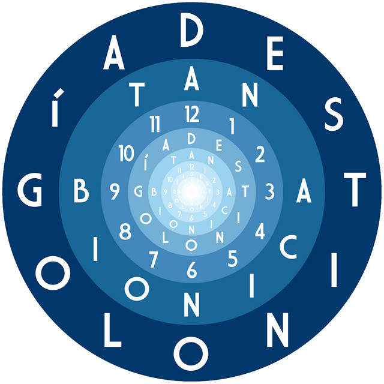

Este ábum es el tercero del grupo musical argentino. Fue lanzado a la venta en de mayo del 2013. Su presentación oficial se realizó en junio del mismo año en la ciudad de Córdoba, dando así inicio al Tour Destinológico, una gira musical que concluyó el 7 de diciembre de 2014 con un concierto en el Hipódromo de Palermo ante más de cien mil personas.
